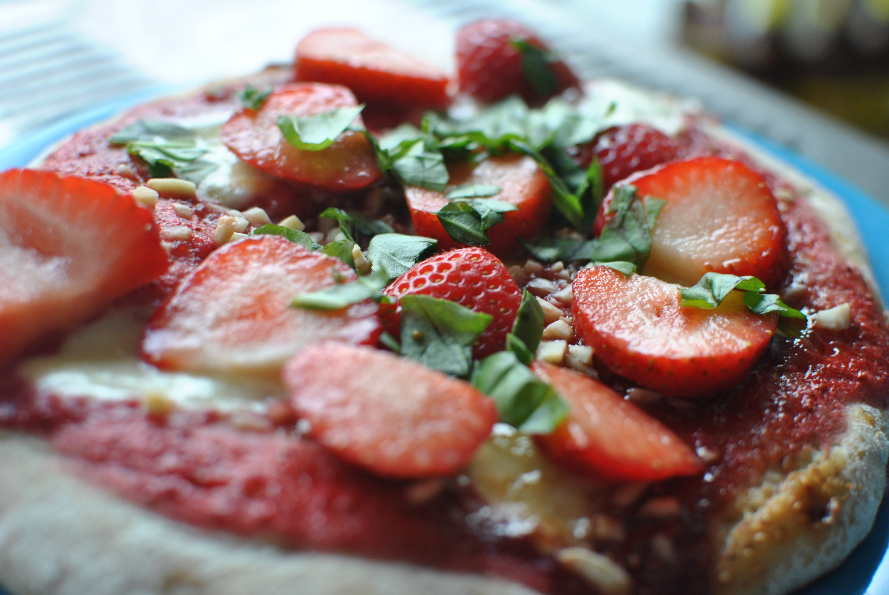

Erdbeer-Pizza mit Basilikum

- Zubereitung: ca. 40 Minuten
- Ruhezeit: ca. 60 Minuten
- Für 4 Stück
Zutaten
- 20 g Hefe
- 350 g Weizenmehl und Mehl zum Arbeiten
- 100 g gemahlene Mandeln
- 1 EL Zucker
- 250 g TK-Erdbeeren
- 2 EL Puderzucker
- 16 Mini-Mozzarellakugeln
- 4 EL brauner Zucker
- 3 EL gehackte Mandeln
- 300 g frische Erdbeeren
- 3 - 4 Zweige Basilikum
Zubereitung
- Die Hefe in 250 ml lauwarmen Wasser auflösen. Mehl, Mandeln, Zucker und eine Prise Salz zugeben, alles zu einem glatten, geschmeidigen Teig verkneten. Diesen in vier gleich große Stücke teilen, jeweils 1 Kugel daraus formen. Die Teigkugeln zugedeckt
an einem warmen Ort circa 1 Stunde gehen lassen.
- Die TK-Erdbeeren und den Puderzucker in einem Topf 10 Minuten bei mittlerer Hitze köcheln, pürieren, die Sauce durch ein feines Sieb streichen. Abkühlen lassen. Die Mozzarellakugeln halbieren.
- Den Backofen auf 250° Celsius (Umluft nicht empfehlenswert) vorheizen. Die Teigkugeln auf einer bemehlten Arbeitsfläche zu Fladen ausrollen. Das Backblech mit Backpapier auslegen, Fladen darauflegen, jeweils mit der Erdbeersauce bestreichen, die
Mozzarellahälften darauf verteilen, mit Zucker und Mandeln bestreuen. Die Pizzas im Ofen etwa 8 Minuten backen.
- Währenddessen die frischen Erdbeeren waschen, putzen und in dicke Scheiben schneiden. Basilikum abbrausen, trocken schütteln, Blätter abzupfen und in feine Streifen schneiden.
- Pizzas mit Erdbeerscheiben belegen und mit den Basilikumstreifen bestreuen.